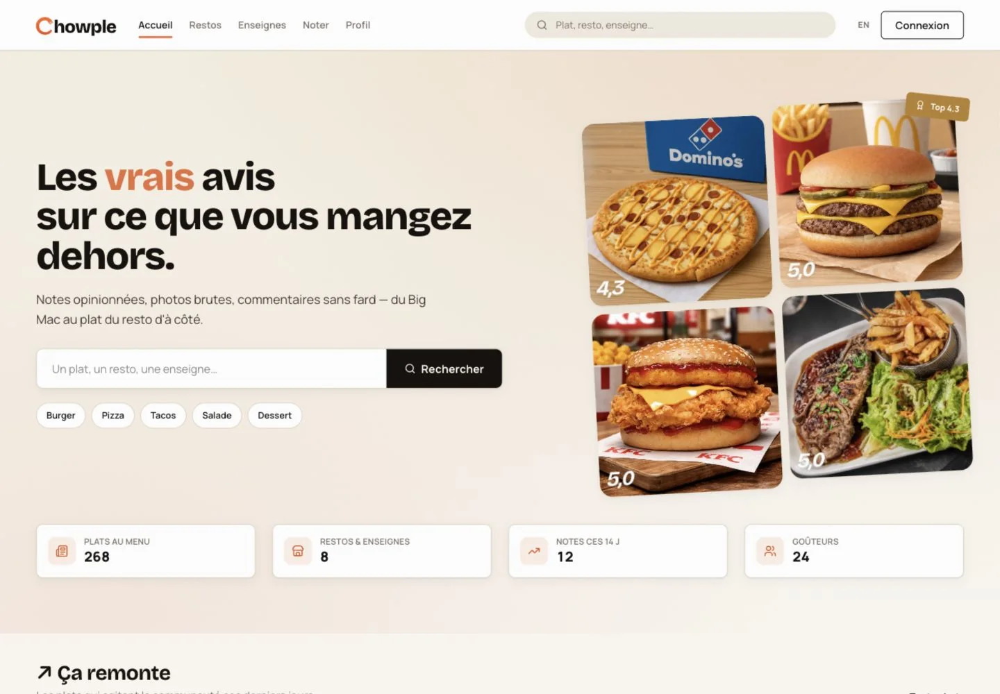
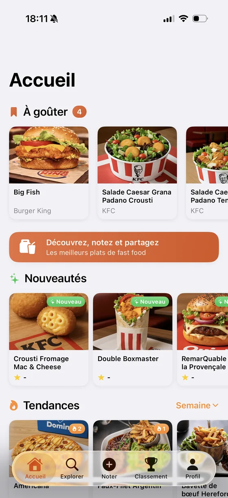
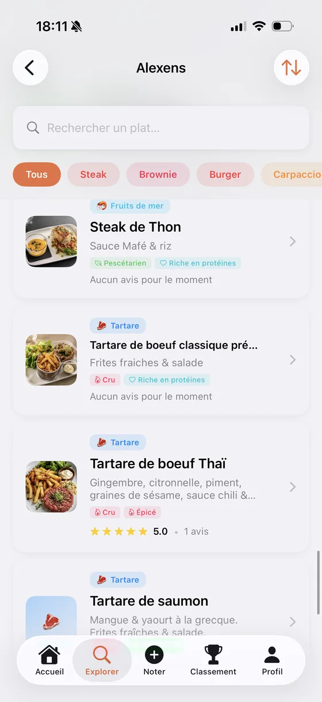
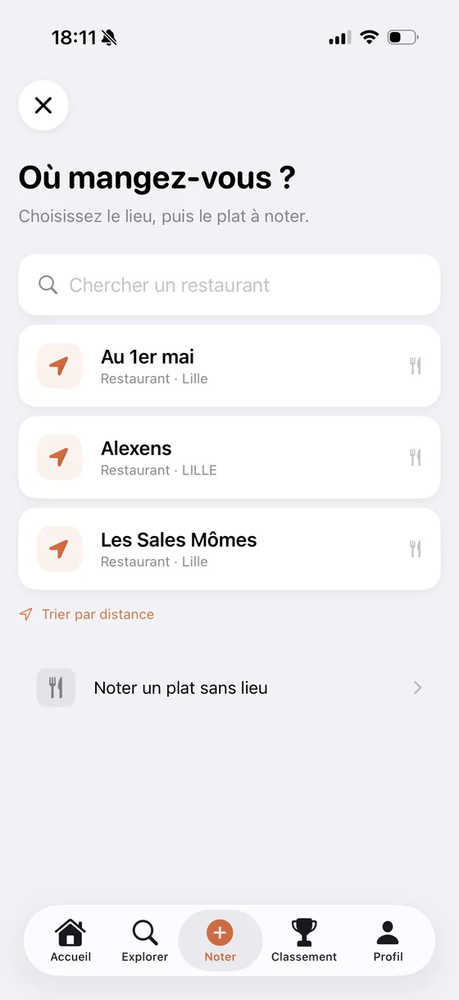
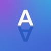
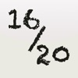
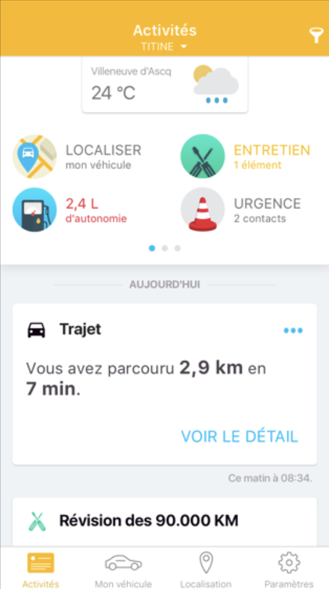
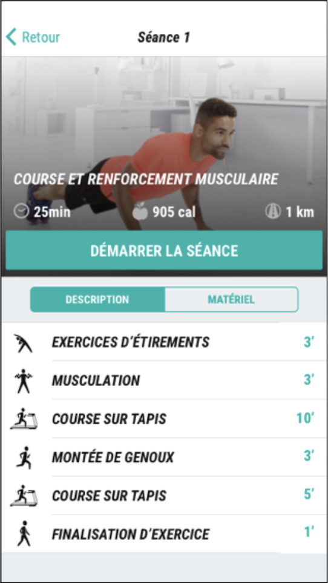
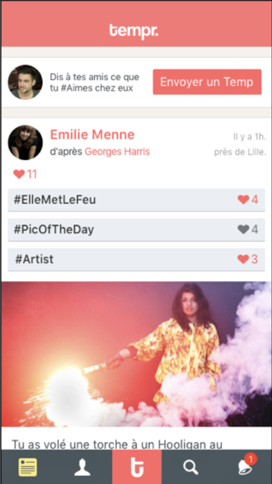
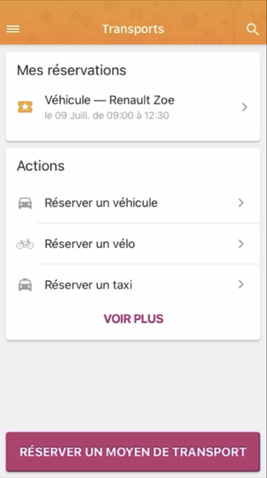

Développement iOS senior
Construction de features Swift, UIKit ou SwiftUI, refonte d'écrans, intégration API, gestion des états, navigation et publication.
Nagord - freelance mobile à Lille et Paris
Développeur iOS senior. Je conçois, stabilise et livre des applications mobiles où l'architecture, le produit et l'exécution doivent avancer ensemble.
Le bon niveau d'aide
Je viens d'un double terrain : les apps de production, avec contraintes de sécurité, maintenance et équipe, et les projets personnels où il faut décider vite, tester, itérer, puis livrer proprement.
Mon rôle est simple : rendre l'app plus solide, plus lisible, plus facile à faire évoluer, sans perdre le fil produit.
Offre
Construction de features Swift, UIKit ou SwiftUI, refonte d'écrans, intégration API, gestion des états, navigation et publication.
Clarification MVVM, VIPER ou architectures existantes, découpage de modules, dette technique, sécurité Keychain, OTP, dépendances et CI.
Prototypage app, app companion iOS, cadrage technique, arbitrages produit et passage d'une intuition à une première version testable.
Projets
Le fil rouge : partir d'un usage réel, trouver le bon niveau de technologie, et garder un codebase qui peut survivre aux prochaines décisions produit.




Projet principal du moment
Produit complet pour découvrir, noter et comparer les plats qu'on mange dehors : accueil éditorial, exploration par restaurant, parcours de note, photos, avis, nouveautés et tendances.
Voir chowple.comExploration
Des projets hors cadre professionnel pour explorer l'exploitation de donnée, le machine learning, la création visuelle et les mécaniques interactives.
Client et delivery
Autoentrepreneuriat mobile et web : prospection, développement d'applications, maintenance, sites vitrines et accompagnement de clients.
App Store
Un catalogue personnel qui couvre jeux de lettres, utilitaires texte, éducation et listes de courses collaboratives. Toutes sont publiées gratuitement sur l'App Store.
Divertissement
Assistant pour jeux de lettres : mots croisés, Scrabble, anagrammes, dictionnaires, entraînement et défi du jour.
Voir sur l'App Store
Divertissement
Transformation de texte avec effets fun, partage par SMS ou messageries, et achats intégrés pour débloquer les effets.
Voir sur l'App Store
Éducation
Calcul de moyenne avec coefficients officiels, voies générale et technologique, mode objectif, confidentialité locale et résultat partageable.
Voir sur l'App StoreShopping
Listes de courses partagées, import intelligent depuis un SMS, catégories personnalisées et collaboration en temps réel.
Voir sur l'App StoreTymate
En CDI chez Tymate, j'ai travaillé sur des produits très différents : automobile, sport connecté, réseau social, réservation d'espaces, enquêtes terrain et immobilier.

Application cliente
Analyse de la conduite et du véhicule à travers un boîtier connecté OBD : trajets, autonomie, entretien, urgence et localisation.

Application cliente
Bibliothèque vidéo d'exercices de coaching gratuits et payants, pensée pour guider les utilisateurs dans leurs séances sportives.

Application cliente
Réseau social positif autour des qualités, des hashtags et des interactions entre amis, avec fil d'activité et mécanique de publication.

Application cliente
Application de gestion et réservation d'espaces de travail et de moyens de transport, synchronisée avec Calendar.
Application cliente
Application compagnon pour tapis de course connecté, avec parcours d'entraînement, séances guidées, durée, calories et distance.
Application cliente
Mise en relation entre professionnels et particuliers pour réaliser des enquêtes terrain, avec logique de missions et remontée d'informations.
Application cliente
Application de gestion de copropriétés, orientée suivi, échanges et services pour les occupants et gestionnaires.
Parcours
Application de remboursement entre amis avec plus d'un million d'utilisateurs : architecture MVVM et VIPER, RxSwift, Swift, sécurité mobile et organisation Scrum.
Développement iOS sur plusieurs applications clientes : automobile connecté, sport, social, réservation, enquêtes terrain et immobilier.
Recherche de clients, applications mobiles, maintenance, sites vitrines et gestion complète de petites missions.
Applications mobiles multi-plateformes dans le domaine de l'édition, preuves de concept et intégrations pour des clients variés.
Formation
Lycée Saint-Louis, Paris - Classe préparatoire, études scientifiques
École Centrale de Lille - Diplôme d'ingénieur
École Centrale de Lille - Mastère spécialisé création d'entreprise et entrepreneuriat
Langues - Anglais professionnel, espagnol opérationnel
Contact
Décrivez-moi votre produit, votre codebase ou le blocage actuel. Je peux aider sur une mission courte, un audit, ou un renfort plus suivi.